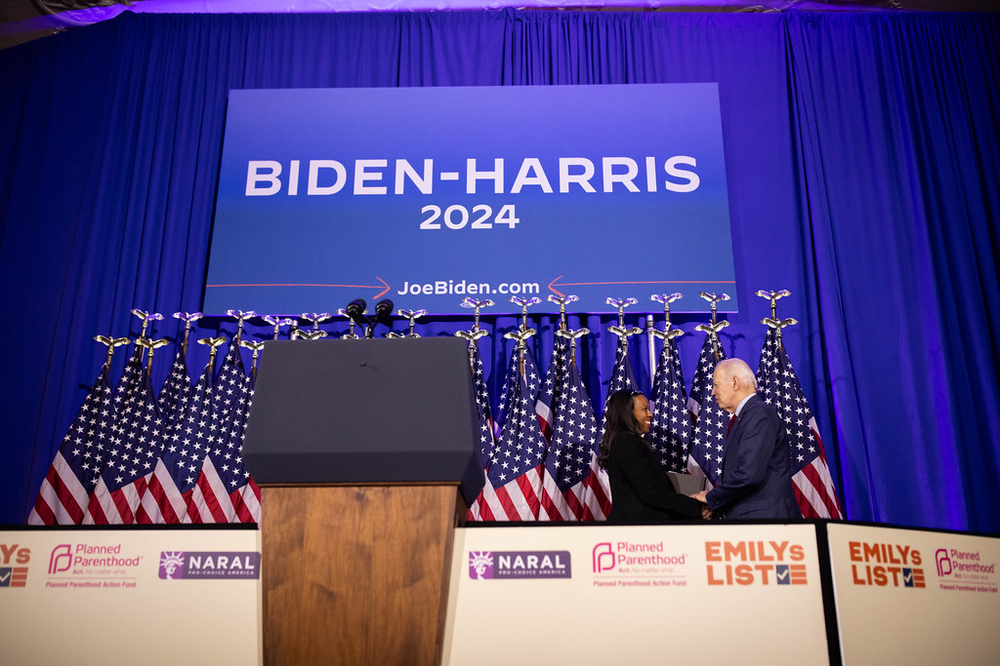

Welcome to the Democratic National Committee
We are at an inflection point right now in this country – one of those moments where the decisions we make will change the trajectory of our nation for decades to come. Each inflection point in our nation's history represents a choice. Ours is to stand up for our fundamental freedoms. This is why Joe Biden is running for re-election. Across the country, MAGA extremists are lining up to take us backward. They're trying to gut Social Security and Medicare, ban access to abortion, tell women what health care choices they're allowed to make, tell you what books you can read to your kids, and restrict your right to vote them out because of it.
But we can stop them and finish the job we started. This is how we do it.
Each of us collectively can play a role to make sure the people closest to us know what's at stake for our families and for our country. This includes the progress we've made and will continue to make if we keep Joe Biden and Kamala Harris in the White House. That means having discussions with our neighbors, our friends, and our families. It's sharing campaign updates and Democratic messaging in our social media circles. It's ensuring our communities know when and how to vote. It's ensuring that our communities and the people closest to us know we're still in a fight for the soul of our nation.